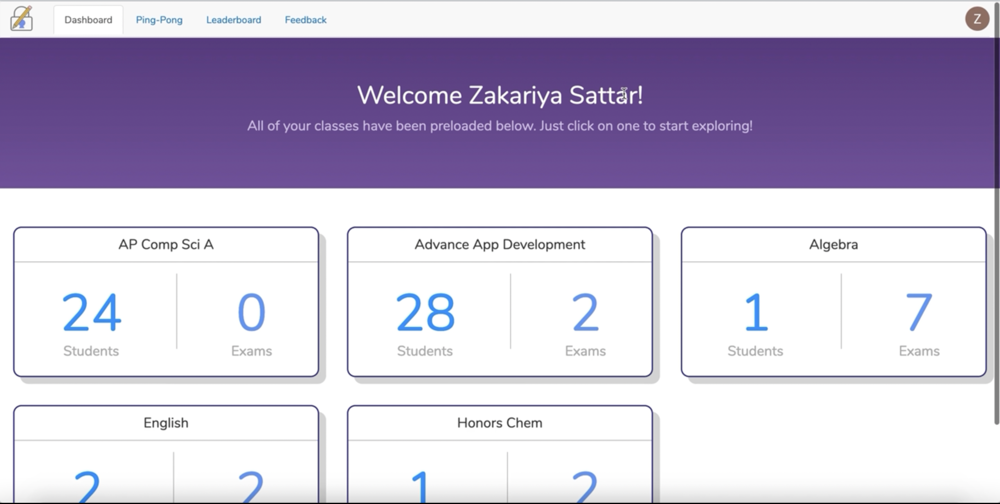
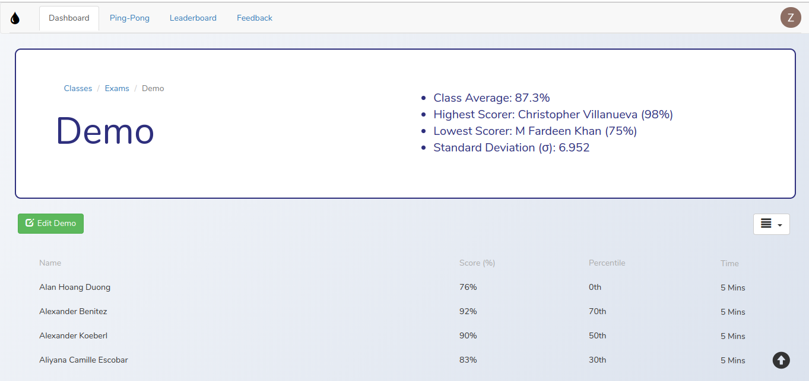
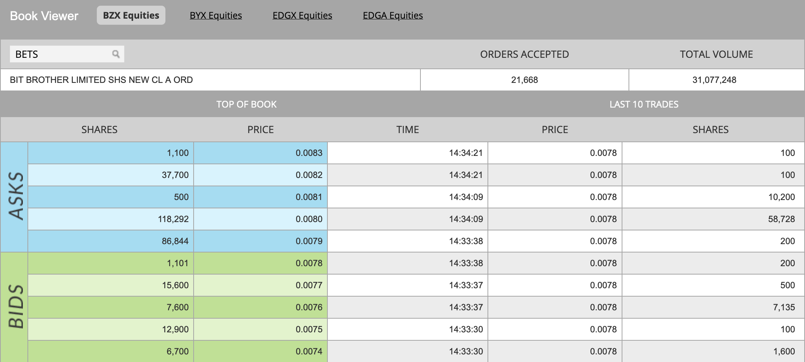
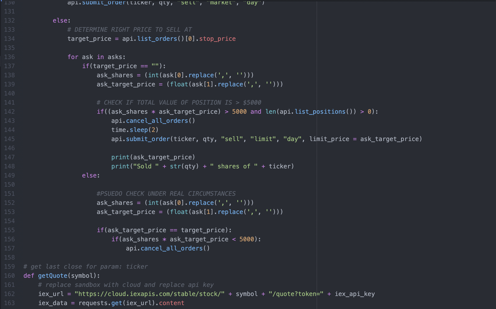

Hello. Where to begin? Well, currently I am a Computer Science student at Michigan State University. Although I'm only a second year,
I have years of coding and leadership experience from High School, where I enrolled in AP Computer Science Advanced as a freshman, and was
elected as president of the App Development Club as a sophomore. After a few more years of learning and developing applications for myself
and for others, I enrolled at MSU. After just a year at MSU, I made the difficult decision to take a leave of absence and study Arabic in
Amman, Jordan for a year. Although the experience took me far out of my comfort zone, I was able to grow and develop myself in ways that I
never thought were possible.
Upon return to MSU, there was a fire under my feet that drove me to accomplish amazing things. Within my first semester, I was able to join a
competitive research lab as an undergraduate research assistant, work on starting my first ever startup, and, of course, excel in my studies.
Nowadays, nearly all my focus is on my career, how I can better myself, and develop my Computer Science knowledge.
Please feel free to contact me via email to schedule an interview or for further insights.


The genesis of Test-Lock arose from two observations: first, the presence of a built-in JavaScript event handler for browser Full-Screen mode exit, and second, the complexity of available testing applications, often challenging to navigate. The concept was straightforward yet transformative: initiate Full-Screen mode upon starting an exam, issue a warning accompanied by a countdown timer on attempts to exit, with the fifth attempt triggering exam submission. If the warning persisted for over 10 seconds, the exam would auto-terminate. This ambitious project marked a significant milestone, requiring not only the implementation of a user-friendly front-end but also the development of robust testing features and a comprehensive back-end for test creation and grading by educators. The project's scale facilitated an in-depth understanding of dynamic webpage creation using JS and HTML, expertise in secure database management, local data storage using JSON and SessionStorage, authentication processes, and complex data calculations.
Both the code and a video demo walkthrough are available on GitHub: Test-Lock


My brief venture into day-trading equipped me with market insights, prompting me to merge this knowledge with my expertise in computer science by crafting a trading algorithm. The discovery of Level II data became pivotal, offering real-time asks and bids for any stock ticker. Recognizing the market's tendency to move in response to these transactions, I identified the larger asks and bids as crucial indicators for predicting stock directions. My algorithm focused on finding the daily market's largest mover, gathering and analyzing bids and asks to make calculated predictions. This approach resulted in a commendable success rate of approximately 77%, showcasing the harmonious integration of market understanding and computer science skills in my innovative endeavors.
The code is available on GitHub: lvl_2
As the president of the App Development Club, I proposed the Niles West Bus App to address the challenge of school buses arriving at random spots daily. With only one security guard aware of bus locations, hundreds of students sought assistance daily. The solution, developed in collaboration with another student, was implemented within a week, garnering over 350 page views on launch day. This project, remarkably simple yet impactful, became an integral part of daily school life, highlighting the potential for meaningful change through my role as a Computer Scientist. Witnessing its seamless integration, I gained a profound understanding of the transformative impact achievable in my field.